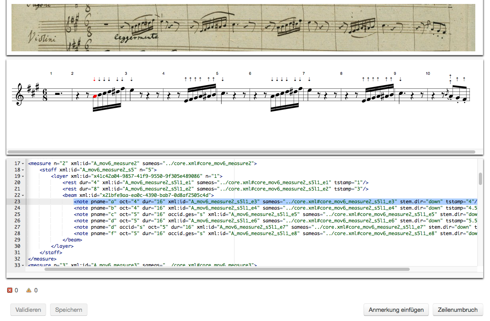
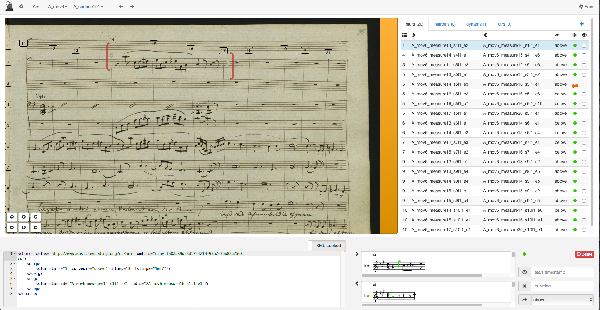
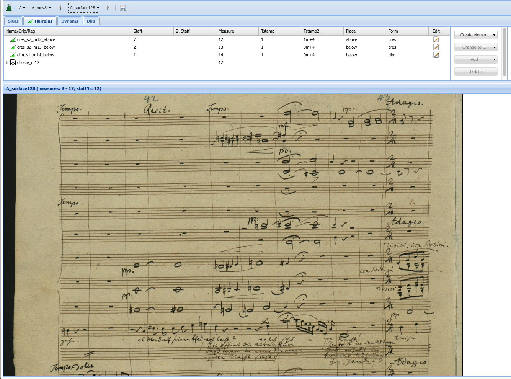
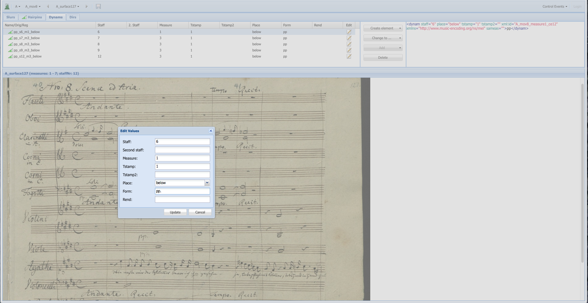

Content
1. Editionskonzept
Das Ziel der Musikedition im Rahmen von Freischütz Digital ist es, das Potential vollständiger Codierungen der musikalischen Inhalte und deren Verknüpfung mit weiteren Editionsbestandteilen aufzuzeigen. Während der Arbeiten im Projekt wurde dabei deutlich, dass der mit den Codierungen verbundene Aufwand in der Praxis deutlich höher ist, als ursprünglich erwartet wurde. Dementsprechend wurde auf eine vollständige Erfassung sämtlicher verfügbaren Quellen verzichtet, so dass die freigewordenen Kapazitäten in die Entwicklung von Hilfsmitteln investiert werden konnten, die diesen Aufwand erheblich senken können. Unter der Perspektive der Nachhaltigkeit wurde der Schwerpunkt des Projekts damit auf Workflows gelegt, die von anderen Projekten nachgenutzt werden können und so deren Effizienz erhöhen, während die Codierungen als ebenfalls nachnutzbares Projektergebnis quantitativ eingeschränkt wurden. Dabei bleiben Längs- und Querschnitte durch die Oper erhalten, d.h. es wird sowohl in einer Quelle das gesamte Werk erfasst, als auch einzelne Sätze in der Breite aller überlieferten Quellen dokumentiert. Aufgrund dieser Auswahl lassen sich alle editorisch relevanten Phänomene und deren Umsetzung in der digitalen Edition zeigen, so dass eine qualitative Einschränkung der Codierungen vermieden wird.
Grundlage der Arbeiten an der digitalen Musikedition von Webers Freischütz stellt eine umfassende Codierung der musikalischen Quellen mit MEI dar. Dabei werden die berücksichtigten Quellen in einer begrenzt diplomatischen Übertragung erfasst, die es erlaubt, Schreibgewohnheiten etwa im Hinblick auf Abkürzungen und ggf. Auflösung von Kurzschreibweisen, Orthographie von Dynamikangaben und Handhabung mehrerer Stimmen in einem System (getrennte Halsung vs. akkordische Schreibweise) zu erfassen. Diese Codierungen werden horizontal auf Taktebene bzw. vertikal für jedes einzelne Notensystem mit den zugehörigen Faksimiles vernüpft, untereinander aber auf Ebene des einzelnen Zeichens miteinander in Beziehung gesetzt. Dabei findet findet keine Wertung der Quellen statt, die zu einer unterschiedlichen Handhabung führen würde – spätere Abschriften und Drucke werden in gleicher Tiefe erschlossen wie Webers Autograph.
Aus diesem Datengeflecht lässt sich die Entwicklung des Werktextes in jedem Detail präzise rekonstruieren, wobei jede entstandene Variante sowohl im Faksimile als auch in einer diplomatisch getreuen Übertragung angezeigt werden kann. Der Benutzer der Ausgabe kann dabei die Granularität des Vergleichs zweier Texte frei wählen: Sollen nur Unterschiede in Tonhöhe und -dauer berücksichtigt werden, sollen auch Schreibgewohnheiten miteinander verglichen werden? Hier bietet gerade der Freischütz interessante Auswertungsmöglichkeiten, da von zwei Kopisten mehrere Abschriften vorliegen, so dass Untersuchungen etwa zur Auflösung von Kurzschreibweisen durch den Vergleich mehrerer Abschriften eines Kopisten besonders komfortabel durchgeführt werden können und neue Erkenntnisse erwarten lassen.
Im Gegensatz zu herkömmlichen Editionskonzepten verzichtet Freischütz Digital bewusst auf die Erstellung eines Edierten Textes, denn das eigentliche Ziel der Edition ist die Dokumentation der Textentwicklung – auch jenseits der Kontrolle durch dessen ursprünglichen Autor.
2. Das Core-Konzept
Die Codierungen der musikalischen Quellen des Freischütz folgen dem sogenannten Core-Konzept. Dabei wird grundsätzlich zwischen substantiellen und akzidentellen Informationen unterschieden, die dann in unterschiedlicher Weise gehandhabt werden. Als substantielle Informationen gelten etwa Tonhöhe und -dauer, Artikulationsanweisungen oder die Reichweiten einzelner Bögen. Als akzidentelle Informationen werden dagegen die Art der Balkung, individuelle Abbreviaturen der verschiedenen Quellen oder die Richtung eines Bogens (über oder unter dem System) bezeichnet. Beide Kategorien werden mittels MEI erfasst, aber in verschiedenen Dateien abgelegt. Zunächst gibt es eine sog. Core-Datei, in der sämtliche substantiellen Informationen aller berücksichtigten Quellen abgelegt werden. Bei Abweichungen der Quellen untereinander werden diese mittels <mei:app> bzw. <mei:rdg> erfasst, d.h. es werden lokal auf die variante Stelle begrenzt die beiden (ggf. auch mehr) alternativen Lesarten codiert und ein Bezug zu den entsprechenden Quellen hergestellt:
<!-- Datei core.xml: -->
<app>
<rdg source="#A #KA1">
<note pname="c"/>
</rdg>
<rdg source="#KA2">
<note pname="d"/>
</rdg>
</app>
<!-- Dieses stark vereinfachte Beispiel besagt, dass die Quellen A und KA1 eine Note "c" wiedergeben, während in Quelle KA2 ein "d" steht. -->Um die so zu erfassenden Abweichungen zwischen den Quellen auf aussagekräftige Unterschiede zu beschränken, werden in der Core-Datei lediglich die wichtigsten Parameter des Notentextes erfasst. Damit ist allein anhand dieser Datei lediglich eine sinngemäße Wiedergabe der Quelle möglich, aber keine diplomatische Übertragung. Aus diesem Grund gibt es für jede einzelne Quelle eine zusätzliche separate Datei, in welcher die vorwiegend graphischen Aspekte des Notentextes beschrieben werden. Um eine Dopplung der Informationen zu vermeiden, wird in diesen Dateien jedoch auf die Codierung der substantiellen Informationen zugunsten eines Verweises auf die entsprechende Stelle Core-Datei verzichtet. Am simplen Beispiel der Richtung eines Notenhalses lässt sich dieses Konzept wie folgt verdeutlichen:
<!-- Datei core.xml: -->
<note xml:id="qwert" pname="c" oct="4" dur="4"/>
<!-- Datei sourceA.xml: -->
<note xml:id="asdfg" sameas="core.xml#qwert" stem.dir="up"/>
<!-- Datei sourceKA1.xml: -->
<note xml:id="yxcvb" sameas="core.xml#qwert" stem.dir="down"/>In der Core-Datei wird die Note als "c" in der vierten Oktave (also im deutschen ein eingestrichenes C, i.e. c') mit der Dauer einer Viertel erfasst. Die Codierung der Quelle nimmt ausdrücklich Bezug auf diese Note und ergänzt die Information, dass der Hals der Note nach oben (Quelle A) bzw. unten (Quelle KA1) gerichtet ist. Damit wird deutlich, wie inhaltlich unwichtigere Abweichungen in die Codierungen der Quellen ausgelagert werden können, ohne in der Core-Datei ein separates <app> zu erfordern.
Für analytische Zwecke reichen die Informationen der Core-Datei i.d.R. aus, für eine (annähernd) diplomatische Wiedergabe wird jedoch die Kombination der beiden Dateien benötigt. Nur in der Quellen-Datei werden u.a. auch Kurzschreibweisen erfasst, d.h. es werden dort Taktwiederholungskürzel, colla-parte-Anweisungen, Tremolo-Spielweisen und sonstige Faulenzer so wiedergegeben, wie sie in der Quelle notiert sind. Diese individuellen Abbreviaturen werden dann zusätzlich in der aufgelösten Form als Alternative in der Quellen-Datei mit angegeben:
<!-- Datei source.xml: -->
<choice>
<orig>
<mRpt/>
</orig>
<reg>
<note sameas="core.xml#…"/>
<note sameas="core.xml#…"/>
<note sameas="core.xml#…"/>
<note sameas="core.xml#…"/>
</reg>
</choice>Die Codierung gibt an, dass in der Quelle ein Taktwiederholungszeichen steht, welches in vier Noten aufzulösen ist. Diese vier Noten werden dann wie gehabt mit der Core-Datei verknüpft. Zusätzlich werden sämtliche aufgelösten Noten mit ihren Vorlagen verknüpft:
<!-- Datei core.xml, Takt n: -->
<note xml:id="c1" dur="1"/>
<!-- Datei core.xml, Takt n+1: -->
<note xml:id="c2" dur="1"/>
<!-- Datei source.xml, Takt n: -->
<note xml:id="n1" sameas="core.xml#c1"/>
<!-- Datei source.xml, Takt n+1: -->
<choice>
<orig>
<mRpt/>
</orig>
<reg>
<note xml:id="n2" corresp="#n1" sameas="core.xml#c2"/>
</reg>
</choice>Damit zeigt sich, dass die Kombination von Kurzschreibweisen sowie Aufteilung von Core- und Quellen-Dateien bereits in einem solch trivialen Fall zu erheblichem Markup mit einer Vielzahl von Querverweisen führt. Diese Komplexität entsteht aus aus den Anforderungen an die Codierung und ließe sich auch durch andere Codierungskonzepte nicht grundsätzlich ändern. Der wesentliche Vorteil des Core-Modells ist eine recht saubere Trennung von "inhaltlichem Kern" der Quellen sowie der graphischen Ausprägungen der einzelnen Quellen, die eine Identifizierung der inhaltlich bedeutsamen Abweichungen erleichtert. Gleichzeitig lassen sich z.B. die Kurzschreibweisen in den einzelnen Quellen gezielt nachvollziehen, und auch ein Vergleich der graphischen Besonderheiten ist (mit etwas höherem Aufwand) weiterhin möglich.
open (?) topics
- durch die Gleichbehandlung der autographen Überlieferung Aufhebung des herkömmlichen Werk- und Autor-Begriffs
- Mündigkeit des Benutzers, der eigene Fragestellungen formulieren kann
- zwingt zur Bereitstellung von "Lesepfaden" und ähnlichen Hilfsmitteln
- zielt nicht unmittelbar auf eine Aufführbarkeit der Edition, sondern die Dokumentation der Entstehungs- und Verbreitungsgeschichte
- damit gibt es Defizite in der Aufbereitung des Materials [ich bin nicht sicher, ob wir hier noch meine Ideen einer dynamischen Anreicherung umsetzen können, deshalb vielleicht lieber vorsichtig formulieren], so dass nicht unmittelbar ein "praktischer" Text zu haben ist
- Desiderat bleibt ebenfalls, die aufführungsspezifischen Korrekturen in den Abschriften vollständig auszuwerten [Streichungen etc., hier schaffen wir höchstens kurze Beispiele]
3. Werkzeuge
Für die Umsetzung des Datenmodells wurde eine Vielzahl von Werkzeugen entwickelt. Diese unterteilen sich in Werkzeuge mit graphischer Benutzeroberfläche, die bestimmte Informationen visualisieren und so die Bearbeitung der Daten erleichtern, und Werkzeuge, die ohne graphische Oberfläche benutzt werden.
- MusicXML to MEI
- MEI cleaning
- Edirom Editor
- Include Music in Core
- Include Music in Sources
- Merge Core and Sources
- Split in pages
- PMD PitchProof
- Add IDs and Tstamps
- checkDurations
- LyricProof
- concatenate Pages
- shortcuts
- PMD ControlEvents
- recore
MusicXML to MEI
Als Grundlage der Codierungen der Notentexte dienen im Fall des Freischütz mit Finale erstellte MusicXML-Dateien, die in Kooperation mit der Carl-Maria-von-Weber-Gesamtausgabe (WeGA) entstanden sind und dort als Roh-Vorlage für die Arbeit am edierten Text der Ausgabe dienen (der edierte Texte der WeGA wird später mit dem Programm Score erstellt). Diese Dateien folgen im Wesentlichen Webers Autograph, lösen aber sämtliche Kurzschreibweisen auf und enthalten bereits erste editorische Ergänzungen. Nach dem Export nach MusicXML werden sie mit dem von Seiten der MusicXML-Community bereitgestellten XSLT von partwise MusicXML zu timewise MusicXML umgestellt, und dann mit dem von der MEI-Community bereitgestellten XSLT nach MEI konvertiert.
MEI cleaning
Die generische Konvertierung von MusicXML nach MEI hinterlässt einige unerwünschte Artefakte in den Daten. So finden sich u.a. graphische Informationen zur Positionierung einzelner Zeichen, die aber nicht deren Position im Autograph beschreiben, sondern innerhalb der Finale-Datei. Da diese Informationen im Rahmen des Projekts nicht benötigt werden, wurde ein XSLT (improveMusic.xsl) entwickelt, welches zunächst die MEI-Dateien säubert und alle graphischen Informationen verwirft. Weiterhin erkennt es u.a. die inhaltlich inkorrekte Codierung von Tremolos (die in Finale rein graphisch, d.h. als Noten mit einem Strich durch den Hals erfasst werden) und ersetzt dies durch die sachlich richtige Codierung mittels <mei:bTrem> bzw. <mei:fTrem>. Weiterhin werden bestimmte Strukturen normiert und verlässliche xml:ids für Takte angelegt.
Edirom Editor
Zunächst werden mit Edirom Editor in gewohnter Weise die einzelnen Quellen des Freischütz aufbereitet und dort für Edirom Online exportiert. Anschließend werden diese Dateien mit einem separaten XSLT (improveEditorExport.xsl) aufbereitet. In diesem Schritt werden u.a. verlässliche xml:ids für Takte angelegt, außerdem Rückverweise von <mei:zone> zu <mei:measure> ergänzt. Gleichzeitig legt das XSLT eine (temporäre) Datei an, über die die Taktzählungen der unterschiedlichen Quellen kontrolliert werden können, um dann durch zwei weitere, nach Bedarf einzusetzende XSLTs (recountMeasures.xsl und moveCoreRefs.xsl) eine Konkordanz der Quellen auf Taktebene sicherzustellen. Dabei entsteht diese Konkordanz zu diesem Zeitpunkt nur durch den Gebrauch der gleichen Taktzahlen.
Include Music in Core
In diesem Schritt werden die beiden bis dahin separaten Datengrundlagen – die auf Finale basierende Codierung der Notentexte sowie die mit Edirom Editor erstellte Erschließung des Manuskripts auf Taktebene ohne musikalischen Inhalt – in Zusammenhang gestellt. Dabei ist zu beachten, dass die Musikcodierungen nur Satzweise erfolgen, Edirom Editor aber eine Codierung der gesamten Quellen bereitstellt. Dementsprechend erstellt das für diesen Schritt verantwortliche XSLT (includeMusic2core.xsl) eine Core-Datei, die lediglich den bereitgestellten Satz des Freischütz beschreibt; die weiteren Arbeitsschritte sind daher bis auf Weiteres satzbasiert.
Das XSLT nutzt die in den beiden vorhergehenden normalisierten xml:ids der Takte, um die Codierungen des Notentextes mit den Dateien aus Edirom Editor abzugleichen und eine neue Codierung anzulegen. Dabei werden die akzidentellen Informationen der Quellen verworfen und eine Core-Datei angelegt (vgl. Datenmodell). Diese Core-Datei ist frei von allen Bezügen zu den Faksimiles der Quellen. Gleichzeitig wird eine "Blaupause" angelegt, d.h. eine temporäre Datei, die als Vorlage für die Codierung der einzelnen Quellen genutzt wird. Diese Blaupause enthält die im Core verworfenen akzidentellen Informationen und stellt die im Datenmodell beschriebenen Beziehungen zwischen Quellencodierung und Core-Datei her.
Include Music in Sources
Hier werden die im vorhergehenden Schritt angelegten "Blaupausen" mit den Dateien aus Edirom Editor tatsächlich zusammengeführt und eine Verbindung von Faksimile-Referenzierung, Bezugnahme auf die Core-Datei und lokaler Codierung akzidenteller Informationen erreicht. Das im Datenmodell beschriebene Core-Konzept wird damit an dieser Stelle erstmals umgesetzt. Das dafür genutzte XSLT (includeMusic2source.xsl) erzeugt gleichzeitig Faksimile-Referenzen für jedes einzelne <mei:staff>-Element, d.h. für jedes System innerhalb der Partitur wird anhand der Besetzung und den Abmessungen des Gesamttaktes berechnet, in welchem Faksimile-Ausschnitt es zu finden ist. Diese Berechnung basiert auf pauschalen Annahmen und trifft im Einzelfall bei sehr unregelmäßigem Schriftbild nicht den idealen Seitenausschnitt, hat sich aber in der weit überwiegenden Zahl der Fälle sehr bewährt und ist aufgrund einer hinreichenden Qualität einer überaus zeitintensiven manuellen Erfassung dieser Ausschnitte jderzeit vorzuziehen.
Merge Core and Sources
Nachdem die Daten im Core-Modell vorliegen, folgt nun das Überprüfen der Daten anhand der Quellen. Wie erwähnt entsprechen die Grundcodierungen annährend dem Autograph, geben dieses aber nach Auflösung aller Kruzschreibweisen wieder. In einem ersten Schritt des Korrekturlesens müssen daher die Daten nicht nur an die jeweilige Quelle angepasst werden, sondern auch sämtliche "Fehlstellen" der Quelle wiederhergestellt werden.
Ein erster Versuch des Projekts, diese Maßnahmen mittels einer graphischen
Benutzeroberfläche, aber dennoch mit direktem Zugriff auf die Codierungen
des Core-Modells zu verwirklichen, hat sich dabei als nicht
praktikabel erwiesen. Durch die Notwendigkeit, jederzeit Quellencodierung
und Core-Datei im Blick zu behalten und in Bezug zu setzen, steigt die
Komplexität dieses Arbeitsschritts auf ein Maß, dass Flüchtigkeitfehler in
einem nicht mehr tolerierbaren Umfang unvermeidbar werden. Aus diesem Grund
wurde ein anderer Ansatz zum Überprüfen der Daten gewählt. Dazu wird die
gerade erst herbeigeführte Struktur wieder aufgelöst, und die substantiellen
Informationen der Core-Datei werden in die Quellen-Dateien per XSLT
(mergeCoreSource.xsl) übernommen. Diese liegen nun
in einer aussagekräftigen, d.h. für sich genommen vollständigen Datei vor.
Allerdings bleiben die @sameas-Beziehungen der einzelnen Elemente in den
Core erhalten, so dass die Möglichkeit zur Rückkehr in den Core
jederzeit gegeben ist. [NB: Tatsächlich benötigen wir diese Referenzen
letztlich nicht mehr, was aber zu diesem Zeitpunkt des Projekts so noch
nicht absehbar war.]
Split in Pages
Um das Korrekturlesen der Daten zu erleichtern, werden die satzweisen Codierungen der einzelnen Quellen nun aufgelöst und in einzelne Dateien pro Mansukript- bzw. Druckseite überführt. Dieser Schritt ist rein technisch begründet und erleichtert das Auslesen und Speichern der Daten in den folgenden Arbeitsschritten. Das dazu genutzte XSLT (generateSystemFiles.xsl) erzeugt automatisch Anmerkungen, welche die je aktuellen Angaben zur Partitur (<mei:scoreDef>) enthält, in der also alle Schlüsselwechsel, veränderten Tonarten und aktuell gültige Transpositionen hinterlegt sind.
PMD PitchProof
Für diesen Schritt wurde ein webbasiertes Werkzeug entworfen und umgesetzt, welches im Wesentlichen zum Korrekturlesen von Tonhöhen und -dauern eingesetzt wird. [@Anna: Gibt es hier nicht schon Texte, und vor allem auch Abbildungen?].
Am Ende dieses Arbeitsschrittes entsprechen die Codierungen hinsichtlich der Noten, Pausen und "Leerstellen" den jeweiligen Quellen.
Add IDs and Tstamps
Da im vorhergehenden Schritt mitunter neue Elemente von Hand angelegt wurden, haben diese nicht immer eine (hinreichend eindeutige) @xml:id. In diesem Schritt werden daher die korrekturgelesenen Daten per XSLT (addIDs_and_tstamps.xsl) überprüft und wo nötig um @xml:ids ergänzt. Gleichzeitig werden für alle Events in MEI (d.h. alle Noten, Akkorde, Pausen etc.) automatisch die zugehörigen @tstamps (= Zählzeiten) berechnet und ergänzt. Mit diesen Zählzeiten werden einerseits benötigt, um alle ControlEvents (in erster Linie Bogensetzung und Dynamikangaben) korrekturlesen zu können, andererseits lassen sich damit die bestehenden Daten auf Plausibilität hin überprüfen (siehe nächsten Schritt).
checkDurations
An dieser Stelle des Arbeitsablaufs wird mit einer Schematron-Datei (sanityCheck_durations.sch) die Plausibilität der bisherigen Daten kontrolliert. Dazu werden die zuvor errechneten Zählzeiten mit der aktuellen Taktart verglichen, um so rhythmisch "unvollständige" oder "übervolle" Takte zu identifizieren. Dabei handelt es sich zu einem großen Teil um Flüchtigkeitsfehler während des Korrekturlesens, zu einem kleineren Teil aber auch um tatsächliche "Fehler" der Quellen. In beiden Fällen erfolgen die nötigen Anpassungen der Codierungen manuell in Oxygen, setzen also ein detailliertes Verständnis von MEI und ein hohes Maß an Disziplin voraus.
Während fehlerhafte Daten stillschweigend korrigiert und an den tatsächlichen Quellenbefund angepasst werden, werden "Fehler" der Quellen (etwa überzählige Punktierungen, fehlende Pausen etc.) als solche markiert und editorisch sinnvoll aufgelöst. Dazu wird auf die MEI-Elemente <sic> und <corr> zurückgegriffen, die mittels eines <choice> verbunden werden. An dieser Stelle werden also erste explizit editorische Eingriffe in die Codierungen notwendig.
LyricProof
In einem weiteren manuellen Schritt werden die Codierungen der Textunterlegungen überprüft und korrigiert. Dazu wird mit einem einfachen XSLT (prepareLyricsProof.xsl) eine HTML-Datei erzeugt, in der ausschließlich die Textunterlegung angezeigt und durch diakritische Zeichen (u.a. Taktstriche und Silbentrennungszeichen) in Bezug zur Partitur gesetzt wird. Alle nötigen Änderungen erfolgen mit Oxygen direkt in den Codierungen.
concatenate Pages
Vor dem nächsten Schritt ist es notwendig, die vorherige Aufteilung in eine seitenbasierte Codierung zu revidieren und zu einer satzweisen Codierung zurückzukehren. Zu diesem Zweck werden mit einem XSLT (concatenateSystems.xsl) die einzelnen Dateien zusammengeführt. Bei dieser Gelegenheit werden in der Musikcodierung <mei:pb/>-Element ergänzt, die den Beginn einer neuen Seite anzeigen und so eine seitenbasierte Auswertung der Daten erleichtern.
shortcuts
Der zweite wesentliche Teilbereich des Korrekturlesens der Daten ist die Erfassung und Auflösung von Kurzschreibweisen. Zu diesem Zweck wird zunächst eine separate Liste mit <cpMark>-Elementen angelegt, die sämtliche Abbreviaturen der Quellen beschreiben. Bei diesem Element handelt es sich um einen Ergänzungsvorschlag für MEI, der bislang nicht in den Standard aufgenommen, aber bereits in andere Projekte wie Beethovens Werkstatt übernommen wurde. <cpMark> steht dabei sowohl für copy mark als auch für colla parte mark, da beide Sachverhalte mit diesem als control event angelegten Element erfasst werden können. Der einfache Fall einer Taktwiederholung wird damit wie folgt beschrieben:
<cpMark staff="5" tstamp="1" tstamp2="0m+4" ref.offset="-1m+1" ref.offset2="0m+4">//</cpMark>Das @ref.offset-Attribut gibt hier an, wie weit nach vorne der zu kopierende Ausschnitt zu finden ist (im vorhergehenden Takt = "-1m", dort auf Zählzeit 1 "+1"). Die Länge des zu kopierenden Abschnitts wird über das @ref.offset2-Attribut beschrieben, dessen Syntax deren von @tstamp2 entspricht und relativ zum mit @ref.offset beschriebenen Beginns des zu kopierenden Abschnitts angegeben wird.
Colla-parte-Anweisungen werden mit dem gleichen Element, aber anderen Attributen angegeben:
<cpMark staff="5" tstamp="1" tstamp2="0m+4" ref.staff="12" dis="8" dis.place="above">c.B.in 8va</cpMark>In dieser Codierung wird beschrieben, dass staff/@n=5 von Zählzeit 1 bis 4 nach oben oktaviert mit staff/@n=12 geführt werden soll. Die in den Quellen vorgefundenen Kurzschreibweisen können dabei als Inhalt des <cpMark>-Elements angegeben werden.
Die <cpMark>-Elemente werden in einer Liste angelegt und verweisen mit einem temporären zusätzlichen Attribut auf den entsprechenden Takt. Diese Liste wird von Hand allein unter Zuhilfenahme der Faksimiles erstellt, d.h. sie stehen zunächst separat neben den eigentlichen Musikcodierungen.
Nach Anlegen der <cpMark>s werden diese beim Auflösen der Kurzschreibweisen mittels XSLT (resolveShortCuts.xsl) in einem vorgeschalteten internen Arbeitsschritt zunächst in die eigentlichen Codierungen integriert, um dann letztlich umgesetzt zu werden. Die Auflösung der Kurzschreibweisen erfolgt in mehreren Schritten und umfasst:
- das Auflösen von Tremolo-Anweisungen (<mei:bTrem> und <mei:fTrem>)
- das Auflösen von Taktwiederholungszeichen
- sowie das Auflösen sonstiger colla-parte-Anweisungen und Wiederholungszeichen.
Zur Auflösung dieser Kurzschreibweisen wird jeweils der originale Befund (häufig einfach eine Leerstelle in der Handschrift, d.h. ein <mei:space>) in ein <mei:orig> gekapselt, neben dem in einem <mei:reg> die zu übernehmenden Noten ergänzt werden. Beides wird in einem <mei:choice> nebeneinandergestellt und erlaubt es so, originalen Quellenbefund und für eine Aufführung vervollständigten Notentext zu vergleichen. Die beim Erstellen des <mei:reg> generierten Noten bekommen dabei immer einen Verweis auf ihre jeweiligen Vorlagen, so dass es möglich wird, für jede Note der Partitur ihren jeweiligen Ursprung nachzuvollziehen. Dabei werden auch mehrstufige Kurzschreibweisen korrekt aufgelöst (etwa eine mehrtaktige colla-parte-Anweisung, in deren kopierter Stimme Taktwiederholungen vorkommen).
PMD ControlEvents
Hier werden mit vier separaten Werkzeugen die in Freischütz Digital berücksichtigten control events korrekturgelesen. Dabei handelt es sich um Bindebögen (<mei:slur>), (de)crescendo-Gabeln (<mei:hairpin>), Dynamikangaben (<mei:dynam>) sowie Spielanweisungen (<mei:dir>).
Aufgabe der Tools ist die Unterstützung des genauen Angleichens des Codes an die jeweilige Quelle. Dies geschieht durch das Pitch- sowie durch das Controlevent-Tool.
Pitch-Tool
Das Pitch-Tool besteht aus einer dreigeteilten, stimmenweisen Anordnung: Der Ausschnitt der jeweiligen Quelle wird mit dem gerenderten Code abgeglichen. Änderungen werden direkt im Code-Ausschnitt eingetragen. Neben der Ergänzung und Löschung von <note>, <rest>, <clef>, <space> und <mRpt>-Elementen, ihrer jeweiligen ganz- oder halbtaktigen Varianten sowie der <beam>, <tuplet>, <bTrem> und <fTrem>-Elemente sind hier die Attribute @pname, @oct, @dur, @dot, @grace, @accid, @artic, @tie sowie @stem.dir korrekturzulesen. Die Pfeile über den Noten zeigen im vorliegenden Beispiel die codierte @stem.dir an.
Controlevent-Tool
Im Controlevent-Tool geht die Korrektur seitenweise vonstatten, um kontextabhängige Entscheidungen zu ermöglichen. Relevant sind Bindebögen, Gabeln, Dynamik-Eintragung sowie Spielanweisungen. Von Faulenzern oder colla Parte-Takten betroffene Controlevents werden behandelt, als seien die betreffenden Stellen ausnotiert. (Eine Zuordnung zum colla Parte ist später durch das zu diesem gehörige <expan> möglich.)
Slurs
Die codierten <slur>-Elemente einer Seite werden aufgelistet. Ein hier angewähltes <slur>-Element wird in der Quelle grafisch hervorgehoben und anhand des Renderings auf korrekten Start- und Endpunkt sowie korrekte @curvedir kontrolliert. Bei eindeutiger Lesart erfolgt dies über @startid und @endid eines Bogen und wird automatisch durch Klick auf eine Note im Rendering (grün hervorgehoben) festgelegt. Die @curvedir wird mittels Dropdown-Menu korrigiert. Fehlende <slur>-Elemente werden ergänzt und obsolete Elemente gelöscht. In Fällen uneindeutiger Lesart können jeweils zwei Start- und Endpunkte ausgewählt werden, wodurch für den betreffenden Bogen automatisch ein <orig>-Element sowie – je nach Anzahl der Lesarten – entsprechende <reg>-Elemente angelegt werden. In diesem Fall wird für das <orig> zusätzlich @tstamp und @tstamp2 des betreffenden Bogens angegeben, um dessen Verlauf ohne Bezug auf ein event festzuhalten.
Hairpins
Wie bei der Slur-Kontrolle finden sich hier die Elemente einer kompletten Seite aufgelistet und können mit der Quelle abgeglichen, ergänzt- oder gelöscht werden. Im create-, bzw. im edit-Menu sind @tstamp und @tstamp2 einer Gabel sowie @form, @staff und @place zu setzen bzw. zu korrigieren. Auch hier kann im Fall einer Uneindeutigkeit einzelner Attribute mittels change-to ein <orig> nebst <reg> für die betreffenden Gabeln angelegt werden.
Dynams & Directions
Auch die <dynam>- und <dir>-Elemente werden seitenweise aufgelistet und abgeglichen. Die Kontrolle erfolgt wie im Fall der Hairpins. Zusätzlich ist hier der betreffende Text (mittels <rend>-Element auch als unterstrichener Text) einzufügen, bzw. zu korrigieren. 
Wichtig ist dabei, dass in diesem Schritt auch die sich durch Kurzschreibweisen ergebenden control events ergänzt werden, da diese häufig die Grenzen zwischen bestehendem und generiertem Notentext überschreiten und nicht hinreichend zuverlässig automatisch generiert werden können.
Am Ende dieses Schrittes liegen vollständige MEI-Codierungen der Quellen vor, die diese weitgehend diplomatisch wiedergeben, gleichzeitig (JV: alternativ) Abbreviaturen und weitere Lücken im Notentext auffüllen, sowie eine erste editorische Aufbereitung der jeweiligen Quellen enthalten.
addAccidGes
Vor der automatisierten Zusammenführung der Daten ist es notwendig, die klingende Tonhöhe jeder einzelnen Note zu ergänzen. Zu diesem Zweck wird mit einem gesonderten XSLT (addAccid.ges.xsl) ein @pnum-Attribut für jede Note angelegt, welches neben der direkten Tonhöhe die Vorzeichnung, zwischenzeitliche Änderungen der Vorzeichnung oder lokale Vorzeichen sowie Transpositionen und Oktavierungen berücksichtigt.
recore
Im vorerst letzten Schritt der Datenaufbereitung werden die überprüften Daten wieder in das Core-Modell überführt, d.h. eine Separation zwischen substantiellen und akzidentellen Informationen vorgenommen (vgl. Datenmodell). Dazu wird zunächst per XSLT (setupNewCore.xsl) mit der ersten vollständig überprüften Quelle eines Satzes eine neue Core-Datei für diesen Satz angelegt, sowie die Codierung der Quelle entsprechend des Datenmodells "abgereichert", so dass lediglich die akzidentellen Informationen erhalten bleiben.
Mit einem weiteren XSLT (merge2Core.xsl) werden dann die weiteren Quellen mit dieser neuen Core-Datei abgeglichen und in einem zweistufigen Verfahren automatisch die Unterschiede erfasst. Zunächst liefert das XSLT eine Liste der gefundenen Abweichungen, die dann manuell anhand der Codierungen und Faksimiles überprüft werden muss. Erst nachdem möglicherweise fehlerhafte Daten bereinigt wurden, wird das XSLT produktiv genutzt. In diesem Modus werden automatisch <mei:app>-Elemente mit <mei:rdg> für jede vorkommende Lesart angelegt, und die jeweils nötigen Verweise aus den Quellen-Dateien in diese Core-Datei erzeugt.
Dieser Schritt ist überaus kritisch, da einerseits mögliche Codierungsfehler als solche erkannt werden müssen, andererseits der leichtfertige Gebrauch zu Daten führen kann, die sich aufgrund ihres Umfangs und ihrer Komplexität nachträglich nur sehr bedingt manuell korrigieren lassen. Der Anspruch dieses XSLTs ist überaus ambitioniert, da die Gleichheit der Quellen inhaltlich bewertet wird, d.h. auch unterschiedliche Schreibweisen des gleichen Inhalts werden als solche erkannt, etwa im Fall von Bläserstimmen, die in einer Quelle akkordisch, in einer weiteren Quelle aber als zwei Stimmen notiert sein können. Trotz gleicher Bedeutung unterscheiden sich die Codierungen dieser Quellen deutlich, so dass ein automatischer Vergleich alles andere als trivial ist. Nach der Identifizierung der Unterschiede werden diese so lokal begrenzt wie möglich wiedergegeben, d.h. es werden nicht einfach vollständige Takte unterschieden, sondern gezielt nur die tatsächlich varianten Bereiche. Damit wird automatisch eine Codierung erreicht, die dem üblichen Stil einer manuellen Codierung entspricht. Außerdem werden automatisch Anmerkungen angelegt, welche die jeweilige Varianz phänomenologisch beschreiben und als Vorlage für eine (manuell anzulegende) Erklärung des Phänomens durch den Editor dienen können.